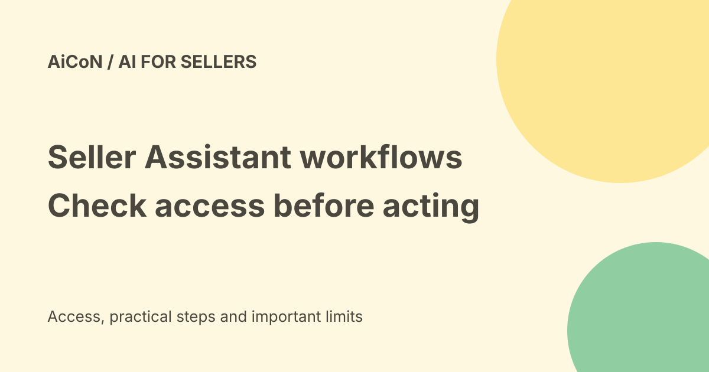

Amazon Seller Assistant: workflows, approvals and the India limit
Amazon has announced Seller Assistant workflows that can watch a business and help with recurring tasks. It has also introduced a Selling Partner plugin for Amazon Quick and a Claude beta. Indian sellers should separate these announcements: the plugin beta is for Amazon U.S. stores, while the Quick Plus offer is described as global.

What is Seller Assistant?
Seller Assistant is Amazon's AI helper for selling partners. Amazon says it can reason across listings, inventory, pricing, advertising and account issues, then explain recommendations. The company says its agentic capabilities have reached more than 90% of selling partners worldwide. That is Amazon's rollout claim, not proof that every new feature appears in every account.
The latest announcement describes persistent memory of pricing patterns, stock cycles and business goals. Its canvas is a visual workspace for comparing scenarios and working with live data. These are product descriptions, not an independent test of accuracy or business results.
What do workflows do?
Instead of asking the same question each day, sellers can describe an ongoing task and set limits. Amazon gives examples such as watching ratings, monitoring stock and analysing price trends. Templates include account-health monitoring, order summaries, pricing analysis and product expansion research.
A workflow can surface recommendations or prepare actions. Amazon says sellers choose the mode, review and approve actions before they happen, and get an audit trail. An audit trail is a record of what happened. It is useful for checking a changed price, listing or stock plan later, but it does not make a bad instruction safe.
What is the Selling Partner plugin?
The plugin brings Amazon selling data and Seller Assistant capabilities into another AI workspace. Amazon names Quick and a Claude beta. Data can include listing contributions, current performance metrics, inventory and sales analysis. The plugin can support actions as well as reading, so permission boundaries matter.
Amazon says plugin interactions have defined access boundaries, human approval and full audit trails. Check the connection's actual permission screen before connecting any account, especially if more than one store or business is listed.
India access and cost
| Plugin beta | Amazon U.S. stores initially; no India-store launch confirmed by this announcement. |
|---|---|
| Quick Plus offer | Primary account holders globally can sign up for 12 months free, through 31 December 2026. |
| Additional users | Amazon says the primary holder can nominate two co-workers for the free year. |
| After the offer | Check the account's billing and renewal terms. This is not a promise of unlimited free use forever. |
Seller fees, advertising spend, stock purchases and any other connected subscriptions remain separate. Eligibility for Quick Plus is not eligibility for the U.S.-store plugin. The announcement does not establish an India-specific workflow schedule or the price after the promotional year.
A careful way to start
- Open your usual official Seller Central account and check which Seller Assistant features are actually offered for that store.
- Start with a read-only question about one product or a narrow date range. Compare the reply against the original report.
- If workflows are available, try a recommendation-only task with a clear limit and review schedule.
- Before enabling actions, set price floors, stock limits and the exact store or product scope. Review the proposed change and the audit log.
- For the plugin or Quick offer, use the official account offer shown to you. Read eligibility, permissions and renewal conditions before accepting.
We did not connect a seller account, claim the offer or change listings. Avoid putting supplier secrets or personal customer data into a workspace unless your business permits it.
Frequently asked questions
Does a free Quick year mean the plugin works for India stores?
No. The offer and plugin rollout have different scopes.
Can the AI change a listing?
Amazon describes action support with seller approval. Inspect the actual proposed change before approving.
Are the time-saving claims proven here?
No. The announcement includes Amazon's claims and beta-user comments. We did not measure results.
What changed since the earlier post?
This guide adds persistent memory, continuous workflows and the external plugin, while making the U.S. beta and global promotional offer distinct. It keeps account access, renewal price and India feature availability as checks rather than promises.
Sources: Amazon announcement and rollout limits. Checked 7 October 2026.